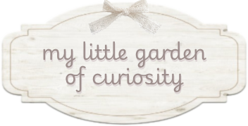
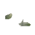
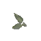
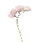
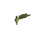
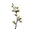
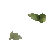
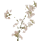
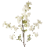
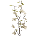

knowledge gardening is the gentle practice of planting little sprouts of information and tending them with wonder, giving them space to grow and bloom.
i am gathering wildflowers of curiosity in here, one at a time, patiently watching the garden become richer with every season of life.








